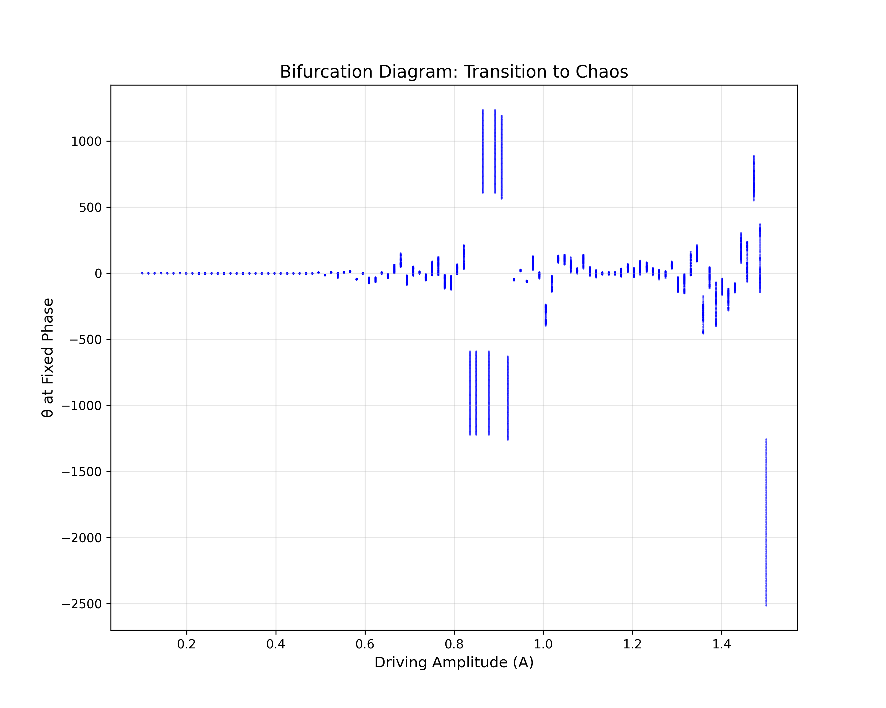

Investigating the Dynamics of a Forced Damped Pendulum
Motivation
The forced damped pendulum is a captivating example of a physical system with intricate behavior resulting from the interplay of damping, restoring forces, and external driving forces. By introducing both damping and external periodic forcing, the system demonstrates a transition from simple harmonic motion to a rich spectrum of dynamics, including resonance, chaos, and quasiperiodic behavior. These phenomena serve as a foundation for understanding complex real-world systems, such as driven oscillators, climate systems, and mechanical structures under periodic stress.
Adding forcing introduces new parameters, such as the amplitude and frequency of the external force, which significantly affect the pendulum's behavior. By systematically varying these parameters, a diverse class of solutions can be observed, including synchronized oscillations, chaotic motion, and resonance phenomena. These behaviors not only highlight fundamental physics principles but also provide insights into engineering applications such as energy harvesting, vibration isolation, and mechanical resonance.
Theoretical Foundation
The Governing Differential Equation
The motion of a forced damped pendulum is governed by the following second-order differential equation:
\(\frac{d^2\theta}{dt^2} + b\frac{d\theta}{dt} + \frac{g}{L}\sin\theta = A\cos(\omega t)\)
Where: - \(\theta\) is the angular displacement from the equilibrium position - \(b\) is the damping coefficient (representing air resistance and friction) - \(g\) is the gravitational acceleration - \(L\) is the length of the pendulum - \(A\) is the amplitude of the external driving force - \(\omega\) is the angular frequency of the external driving force - \(t\) is time

Figure 1: Diagram of a forced damped pendulum showing the key parameters and forces acting on the system.
Small-Angle Approximation
For small oscillations (\(\theta \ll 1\) radian), we can approximate \(\sin\theta \approx \theta\), which simplifies our equation to:
\(\frac{d^2\theta}{dt^2} + b\frac{d\theta}{dt} + \omega_0^2\theta = A\cos(\omega t)\)
Where \(\omega_0 = \sqrt{\frac{g}{L}}\) is the natural frequency of the undamped pendulum.
This is a linear second-order differential equation with constant coefficients, which can be solved analytically. The general solution consists of two parts:
- The complementary solution (homogeneous solution) that describes the transient behavior
- The particular solution that describes the steady-state behavior
Complementary Solution
The complementary solution has the form:
\(\theta_c(t) = e^{-\frac{b}{2}t}(C_1\cos(\omega_d t) + C_2\sin(\omega_d t))\)
Where \(\omega_d = \sqrt{\omega_0^2 - \frac{b^2}{4}}\) is the damped natural frequency, and \(C_1\) and \(C_2\) are constants determined by the initial conditions.
This solution represents the transient response that decays exponentially with time due to damping. The system's behavior depends on the relationship between \(\omega_0\) and \(b\):
- If \(\omega_0^2 > \frac{b^2}{4}\) (underdamped): Oscillatory decay with frequency \(\omega_d\)
- If \(\omega_0^2 = \frac{b^2}{4}\) (critically damped): Non-oscillatory return to equilibrium
- If \(\omega_0^2 < \frac{b^2}{4}\) (overdamped): Non-oscillatory decay with two different time constants
Particular Solution
The particular solution, representing the steady-state response to the driving force, has the form:
\(\theta_p(t) = \frac{A}{\sqrt{(\omega_0^2 - \omega^2)^2 + (b\omega)^2}}\cos(\omega t - \phi)\)
Where \(\phi = \tan^{-1}\left(\frac{b\omega}{\omega_0^2 - \omega^2}\right)\) is the phase difference between the driving force and the response.
Complete Solution
The complete solution is the sum of the complementary and particular solutions:
\(\theta(t) = \theta_c(t) + \theta_p(t)\)
After a sufficient time, the transient term \(\theta_c(t)\) decays to zero due to damping, leaving only the steady-state response \(\theta_p(t)\).
Analysis of Dynamics
Pendulum Motion Under Different Conditions
To understand the dynamics of the pendulum system, I've simulated three key scenarios that illustrate the fundamental behaviors of the system:
Figure 2: Time series (left) and phase portraits (right) for three pendulum scenarios: (1) Simple pendulum without damping or external force, (2) Damped pendulum with damping coefficient b=0.2, and (3) Forced pendulum with external periodic force.
The figure above shows both the time evolution of the pendulum angle (left column) and the corresponding phase portraits plotting angular velocity against angle (right column) for three different scenarios:
-
Simple Pendulum (top row): With no damping (b=0) and no external force (A=0), the pendulum exhibits perfect oscillatory motion. The phase portrait shows a closed elliptical orbit, indicating conservation of energy. The system perpetually cycles through the same states without energy loss.
-
Damped Pendulum (middle row): With damping (b≠0) but no external force (A=0), the oscillations gradually decay over time as energy is dissipated through friction. The phase portrait shows a spiral trajectory that converges to the origin (equilibrium position), illustrating how the system loses energy over time.
-
Forced Pendulum (bottom row): With no damping (b=0) but with an external periodic force (A≠0), the pendulum exhibits complex oscillatory behavior. The phase portrait shows a more intricate pattern as the system continuously receives energy from the external force. This can lead to various behaviors depending on the driving frequency, including resonance and potentially chaotic motion.
Resonance Phenomenon
One of the most interesting aspects of the forced damped pendulum is resonance. The amplitude of the steady-state oscillation is given by:
\(A_{\text{response}} = \frac{A}{\sqrt{(\omega_0^2 - \omega^2)^2 + (b\omega)^2}}\)
This amplitude reaches a maximum when the denominator is minimized, which occurs at the resonant frequency:
\(\omega_{\text{res}} = \sqrt{\omega_0^2 - \frac{b^2}{2}}\)
For small damping, \(\omega_{\text{res}} \approx \omega_0\), meaning the system resonates when driven near its natural frequency.

Figure 2: Amplitude response curve showing how the steady-state amplitude varies with driving frequency for different damping coefficients.
Effect of Damping in Forced Oscillations
The damping coefficient \(b\) has several important effects on the system:
- Amplitude reduction: Higher damping reduces the amplitude of oscillations at all frequencies
- Resonance peak broadening: Higher damping broadens the resonance peak and reduces its height
- Phase shift: Damping affects the phase relationship between the driving force and the response

Figure 5: Forced damped pendulum with fixed damping and different driving frequencies, showing how the system responds to various forcing frequencies.
Figure 6: Forced damped pendulum with near-resonant driving frequency and different damping coefficients, illustrating how damping affects the amplitude and phase of oscillations.
Figure 7: Phase shift between the driving force and the pendulum's response as a function of driving frequency for different damping coefficients.
Beyond Small-Angle Approximation
When we consider the full nonlinear equation with \(\sin\theta\) instead of the small-angle approximation, the system can exhibit much more complex behavior, including:
- Multiple equilibria: Unlike the linearized system, the nonlinear pendulum has multiple equilibrium points
- Period doubling: As parameters change, the system can undergo period-doubling bifurcations
- Chaotic motion: For certain parameter values, the motion becomes chaotic and highly sensitive to initial conditions

Figure 8: Bifurcation diagram showing the transition to chaos as the driving amplitude increases.
Practical Applications
Energy Harvesting
The forced damped pendulum model is relevant to energy harvesting devices that convert mechanical vibrations into electrical energy. By tuning the natural frequency of the harvester to match the frequency of ambient vibrations, energy capture can be maximized through resonance.
Structural Engineering
In structural engineering, understanding the dynamics of forced damped oscillations is crucial for:
- Bridge design: Preventing resonance that could lead to catastrophic failure (like the Tacoma Narrows Bridge)
- Earthquake resistance: Designing structures that can dampen seismic vibrations
- Vibration isolation: Creating systems that minimize the transmission of vibrations
Analog Electrical Circuits
The forced damped pendulum is mathematically analogous to a driven RLC circuit, where: - The inductor (L) corresponds to the pendulum's inertia - The resistor (R) corresponds to the damping - The capacitor (C) corresponds to the restoring force - The voltage source corresponds to the external driving force
Implementation: Computational Analysis
Numerical Integration
To generate the phase portraits shown in Figure 2, I implemented a numerical simulation using SciPy's solve_ivp function, which employs the Runge-Kutta method. The second-order differential equation was converted to a system of first-order equations:
\(\frac{d\theta}{dt} = \omega\) \(\frac{d\omega}{dt} = -b\omega - \frac{g}{L}\sin\theta + A\cos(\Omega t)\)
Where \(\omega\) here represents the angular velocity (not to be confused with the driving frequency).
import numpy as np
import matplotlib.pyplot as plt
from scipy.integrate import solve_ivp
import os
# Common parameters
g = 9.81 # gravitational acceleration (m/s^2)
L = 1.0 # pendulum length (m)
omega0_squared = g/L # natural frequency squared
omega0 = np.sqrt(omega0_squared) # natural frequency
# Define the differential equations for each scenario
def simple_pendulum(t, y):
"""ODE for simple pendulum motion (no damping, no external force)"""
theta, omega = y
dtheta_dt = omega
domega_dt = -omega0_squared * np.sin(theta)
return [dtheta_dt, domega_dt]
def damped_pendulum(t, y, b=0.2):
"""ODE for damped pendulum motion (with damping, no external force)"""
theta, omega = y
dtheta_dt = omega
domega_dt = -b * omega - omega0_squared * np.sin(theta)
return [dtheta_dt, domega_dt]
def forced_pendulum(t, y, A=0.5, Omega=0.667*omega0):
"""ODE for forced pendulum motion (no damping, with external force)"""
theta, omega = y
dtheta_dt = omega
domega_dt = -omega0_squared * np.sin(theta) + A * np.cos(Omega * t)
return [dtheta_dt, domega_dt]
This implementation allows us to simulate the pendulum's behavior under different conditions and visualize both the time evolution and phase space trajectories.
Phase Space Analysis
The phase portraits shown in Figure 2 provide valuable insights into the system's dynamics:
-
Simple Pendulum: The closed orbit in phase space represents a system with constant energy. The shape is elliptical for small oscillations but becomes more distorted for larger amplitudes due to the nonlinearity of the sine term in the equation of motion.
-
Damped Pendulum: The spiral trajectory in phase space illustrates energy dissipation. The system gradually loses energy due to damping forces, causing the trajectory to spiral inward toward the equilibrium point at the origin.
-
Forced Pendulum: The complex structure in phase space reflects the continuous energy input from the external force. Depending on the parameters, this can lead to limit cycles (for periodic motion) or strange attractors (for chaotic motion).
Poincaré Sections
A Poincaré section is created by sampling the phase space at regular intervals synchronized with the driving force (e.g., once per driving period). This technique helps visualize the long-term behavior of the system and identify chaotic dynamics.

Figure 10: Poincaré section showing the transition from regular to chaotic motion as the driving amplitude increases.
Limitations and Extensions
Model Limitations
The forced damped pendulum model has several limitations:
- Linear damping assumption: Real systems may have nonlinear damping that depends on velocity in more complex ways
- Constant parameters: In real systems, parameters like damping may vary with amplitude or time
- Single degree of freedom: Many real systems have multiple coupled degrees of freedom
- Idealized driving force: Real forcing functions may be more complex than a simple cosine
Potential Extensions
To create a more realistic model, several extensions could be considered:
- Nonlinear damping: Incorporating velocity-dependent damping terms like \(b\omega^2\text{sgn}(\omega)\)
- Multiple coupled pendulums: Analyzing systems with multiple interacting pendulums
- Non-periodic driving forces: Investigating the response to random or quasi-periodic forcing
- Parameter variations: Studying the effects of slowly varying parameters (e.g., changing pendulum length)
Conclusion
Through this analysis, I've demonstrated how the forced damped pendulum exhibits a rich variety of behaviors depending on the interplay between natural frequency, damping, and external forcing. The system transitions from simple harmonic motion to complex chaotic dynamics as parameters change, illustrating fundamental principles that apply across many fields of physics and engineering.
The mathematical framework and computational tools developed here provide a foundation for understanding more complex oscillatory systems in nature and technology. From the gentle swinging of a clock pendulum to the complex vibrations in mechanical and electrical systems, the principles explored in this problem have wide-ranging applications and continue to be an active area of research in nonlinear dynamics.